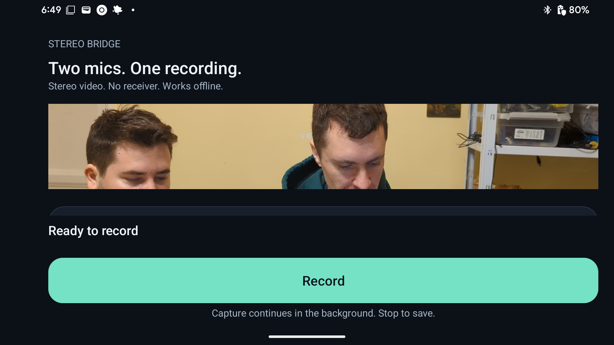

Offline recorder update: 0.2.0. Google Play review pending.
Two mics.
One recording.
Record video inside Stereo Bridge with two original DJI Mic Mini transmitters as separate left and right audio channels. No receiver. Audio stays on your phone.

Record and save
- Pair both original DJI Mic Mini transmitters in Android Bluetooth settings.
- Open Stereo Bridge and tap Record. Allow camera and Nearby devices access on Android 12 or later.
- Tap Stop to save the video to Movies / Stereo Bridge.
Capture continues with the screen asleep or another app open. Optional notifications provide status and Stop; when notifications are off, return to the app to Stop.
Compatibility
Android 10 or later with a camera and classic Bluetooth. ARM 32-bit, ARM 64-bit and x86_64 candidate builds use portable LC3 decoding. Physical microphone validation is on Pixel 6 / Android 15 with two original DJI Mic Mini transmitters; broader device compatibility and endurance validation remain pending. DJI Mic Mini 2, DJI Mic and DJI Mic 2 are unsupported.
Independent levels, gain, mute and channel swap are available under Advanced. No Wi-Fi, wireless debugging, root or account is needed.
See the recording flow
Pixel 6 / Android 15, two original DJI Mic Mini transmitters. This screen demonstration has no audio; the phone home screen is hidden while recording continues in the background.